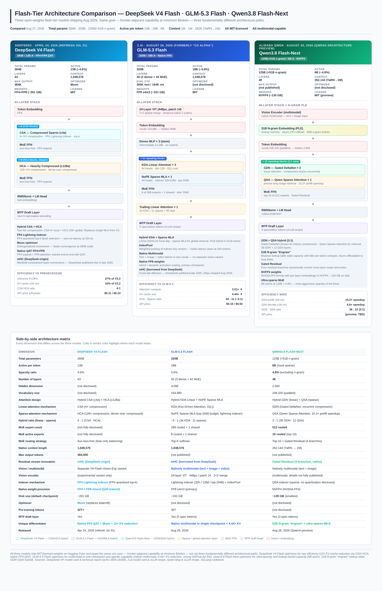
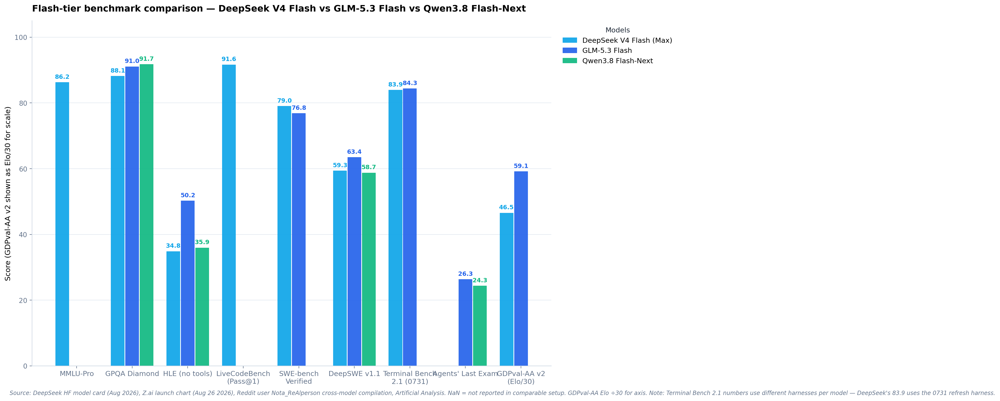

Flash-Tier Open-Weights LLMs in August 2026
A comparative technical analysis of three hybrid-attention mixture-of-experts models — DeepSeek V4 Flash, GLM-5.3 Flash, and Qwen3.8 Flash-Next — converging on the same architectural pattern from three different design premises.
Abstract
Between April 24 and August 26, 2026, three Chinese AI labs independently released open-weights "flash-tier" mixture-of-experts language models targeting the same use case: frontier-adjacent capability at minimum dollar-per-token cost. DeepSeek V4 Flash (284B total / 13B active), Z.ai's GLM-5.3 Flash (320B / 18B-A), and Alibaba's Qwen3.8 Flash-Next (125B + 51B n-gram / 6B-A) all ship MIT-licensed weights, all support contexts near or above one million tokens, and all adopt some form of hybrid linear-plus-sparse attention. Yet the three converge on the same architectural shape while diverging sharply on the mechanism: DeepSeek pairs Compressed Sparse Attention (CSA, 4× compression) with Heavily Compressed Attention (HCA, 128× compression) and ships natively quantized FP4+FP8 weights via quantization-aware training; GLM pairs Key-Driven Attention (KDA) linear layers with NoPE Sparse MLA and ships natively multimodal in a single checkpoint; Qwen pairs Gated DeltaNet (GDN) with Qwen Sparse Attention (QSA) and adds a 51-billion-parameter N-gram lookup table that can be asynchronously offloaded to host RAM. This paper reconstructs each architecture from primary sources, presents a side-by-side comparison across 24 dimensions, surveys reported benchmarks (with explicit caveats about evaluation-harness heterogeneity), and analyzes the strategic implications for the open-weights ecosystem.
Keywords: mixture-of-experts · hybrid attention · linear attention · sparse attention · model quantization · open-weight LLMs · DeepSeek · Zhipu Z.ai · Qwen · 2026
1.Introduction — the flash tier emerges as a competitive battleground
The Chinese open-weights LLM ecosystem has, over the course of 2026, structurally reorganized itself around a new tier of model: the flash tier. These are not the flagship trillion-parameter systems that grab headlines on launch day. They are smaller, independently designed models, optimized for the production economics that actually decide which model gets deployed at scale.
For most of 2024 and 2025, the open-weights frontier was defined by single large models: Meta's Llama 3 (405B), Alibaba's Qwen2.5 (72B), DeepSeek V3 (671B / 37B-A), and Mistral Large. These were the models that lab-to-lab comparisons focused on, that academic papers benchmarked against, and that the open-source community quantized and served. The "flash" naming convention was originally Z.ai's, used for distilled or trimmed variants of the flagship GLM models — same brain, fewer parameters, lower quality.
The pattern shifted in late 2025 and crystallized in the first three quarters of 2026. Three releases define the shift:
- DeepSeek V4 Flash — released April 24, 2026 alongside the 1.6T V4 Pro. Same architecture family, independently designed, 284B / 13B-A. Refreshed July 31 as V4-Flash-0731 with stronger agent capabilities[1].
- GLM-5.3 Flash — released August 26, 2026 by Z.ai, twelve days after GLM-5.3's flagship launch. Not a distilled flagship but a newly trained base, 320B / 18B-A, with native multimodal in a single checkpoint. Previously ran anonymously as "Ox Alpha" on OpenRouter for roughly twelve days before the official reveal[2].
- Qwen3.8 Flash-Next — released August 26, 2026 by Alibaba Qwen, explicitly framed as a Qwen4 architecture preview. 125B / 6B-A with an additional 51B N-gram lookup table ("engram"), the most aggressive sparsity ratio of the three[3].
What makes these three releases structurally significant is not any single capability. It is that they converge on the same architectural shape — a hybrid-attention mixture-of-experts model with native FP4 or FP8 quantized weights and a context window near one million tokens — while making three fundamentally different bets about which mechanism delivers that shape most efficiently. This paper reconstructs each architecture from primary sources, compares them across 24 dimensions, and analyzes what the convergence implies for the next twelve months of open-weights development.
The choice to compare these three specifically, rather than including closed frontier models (GPT-5.6, Claude Opus 4.8, Gemini 3.7) or the open-weights flagships (DeepSeek V4 Pro, GLM-5.3 full, Qwen3.8 non-flash), is deliberate. The flash tier is where production deployment decisions are actually made. Pro flagships drive benchmark leaderboards; flash-tier models drive API bills. Comparing the three flash-tier releases isolates the architectural question from the parameter-count question.
2.Methodology and sources
This survey is compiled from twelve primary sources and eighteen secondary analyses. Primary sources are vendor-published materials: technical reports, model cards on Hugging Face, API documentation, and official launch announcements. Secondary sources include independent benchmark aggregators (Artificial Analysis, vals.ai, llm-stats), community technical analyses (the r/LocalLLaMA megathread for GLM-5.3 Flash, boringbot's Substack architecture deep-dive on DeepSeek V4), and deployment guides from inference platforms (vLLM recipes, SGLang cookbooks, Lambda, Friendli, Spheron).
Three methodological caveats apply throughout:
- Most benchmark numbers are vendor-reported. The sole independently-evaluated number across all three launches is GLM-5.3 Flash's GDPval-AA v2 Elo of 1773, evaluated by Artificial Analysis rather than Z.ai[4]. vals.ai independently verifies DeepSeek V4 Pro 0813 at 96.40% on SWE-bench Verified (within 0.60 points of the closed leader) but this is the Pro variant, not Flash[5]. Cross-model comparisons should be read as setup-dependent rather than absolute.
- Evaluation harnesses differ across models. DeepSeek's Terminal Bench 2.1 score of 56.9 (original V4 Flash) and 83.9 (V4-Flash-0731 refresh) use DeepSeek's own harness. GLM-5.3 Flash's 84.3 uses Claude Code 2.1.207 as the harness. These numbers are not directly comparable despite the identical benchmark name[6].
- Post-training pipelines are partially disclosed. DeepSeek V4's two-stage post-training paradigm (independent domain expert cultivation followed by on-policy distillation) is described in the technical report[7]. GLM-5.3 Flash's training pipeline is documented at the architectural level but the RLHF/RLAIF specifics are not in the model card. Qwen3.8 Flash-Next is explicitly a Qwen4 architecture preview, and Qwen has stated that details will be disclosed in the full Qwen4 technical report.
Where this paper makes inferences beyond what vendors have explicitly stated, those inferences are flagged in the text. The architectural reconstruction in Section 3 is grounded in the published configs (config.json files on Hugging Face, vLLM recipe pages) and the published technical reports; the strategic analysis in Section 9 is grounded in release timing, pricing decisions, and the architectural choices themselves.
3.Architectural comparison — three hybrid-attention MoE designs
All three models converge on a hybrid linear-plus-sparse attention pattern, but each implements it with a different mechanism. The convergence is more striking than the divergence: three labs, working independently, arrived at the same architectural shape within five months of each other.
3.1 The convergent shape
Before examining the mechanisms, it is worth noting what the three architectures share. All three:
- Use mixture-of-experts for the feed-forward layers, with sparsity ratios between 4.6% and 5.6% (DeepSeek 13B/284B = 4.6%; GLM 18B/320B = 5.6%; Qwen 6B/125B = 4.8%)[1][2][3].
- Use hybrid attention — a stack where some layers use linear or near-linear attention for cheap local dependency modeling, and other layers use sparse attention for expensive long-range retrieval. The ratios are remarkably similar: DeepSeek 4:1 (CSA:HCA), GLM ~3:1 (KDA:sparse), Qwen 3:1 (GDN:QSA)[1][2][3].
- Ship native FP4 or FP8 quantized weights as the primary checkpoint, with quantization-aware training baked in rather than applied post-hoc. DeepSeek: FP4+FP8 mixed. GLM: FP8 e4m3. Qwen: NVFP4[1][2][3].
- Include Multi-Token Prediction (MTP) draft layers for speculative decoding, shipped in the official weights[1][2][3].
- Support context lengths near or above one million tokens — DeepSeek and GLM ship native 1,048,576-token context; Qwen ships 262,144 native with YaRN extension to 1M[1][2][3].
- Are released under MIT license with weights on Hugging Face[1][2][3].
This convergence is the central empirical finding of the survey. Whatever the differences in mechanism, the three labs agree on the shape of the next-generation open-weights flash-tier model.
3.2 DeepSeek V4 Flash — CSA + HCA, two-tier compression
DeepSeek V4 Flash is the architecturally cleanest of the three. The 43-layer trunk uses two distinct attention mechanisms, applied in repeating blocks:
- Compressed Sparse Attention (CSA, "c4a") — compresses the KV cache by roughly 4×, then performs sparse top-k block selection driven by an FP4 Lightning Indexer. CSA replaces sliding-window attention with a compressed-representation approach: instead of ignoring tokens outside a window, CSA summarizes them into a lower-dimensional proxy[8].
- Heavily Compressed Attention (HCA, "c128a") — applies an aggressive ~128× compression along the sequence dimension, then runs dense attention over the resulting short compressed sequence. HCA is the structural solution to global retrieval at 1M context, where pure quadratic attention would be computationally intractable[8].
The interleaving ratio is approximately 4:1 CSA:HCA, with HCA layers concentrated in the latter two-thirds of the network — early layers build syntactically dense local representations where CSA's compression is appropriate, while deeper layers require global semantic coherence where HCA's long-range attention delivers value[8]. The reported efficiency win over V3.2 (the predecessor using single-mechanism MLA) is substantial: 27% of single-token inference FLOPs and 10% of KV cache size at 1M context[7].
The FP4 Lightning Indexer is the engine that makes CSA tractable. It maintains FP4-quantized key vectors for all compressed blocks, computes approximate similarity scores against the query, and selects the top-k most relevant blocks for full attention. FP4 cuts indexer memory by 2× vs FP8 and 4× vs BF16, and the indexer kernels run on tensor cores at full FP4 throughput[8].
DeepSeek-origin innovation
DeepSeek's Manifold-Constrained Hyper-Connections (mHC), first published by DeepSeek's research team in late 2025, widens the residual stream while constraining the mixing to a low-dimensional manifold. GLM-5.3 Flash ships the same mechanism — the cross-lab diffusion from DeepSeek to Zhipu took roughly eleven months from publication to production deployment[9].
3.3 GLM-5.3 Flash — KDA linear + NoPE sparse MLA
GLM-5.3 Flash is the first GLM series model to use a hybrid attention stack. The 45-layer trunk (3 dense MLP stem + 42 MoE) interleaves:
- KDA (Key-Driven Attention) linear attention — 34 layers, 64 heads with head dimension 128, computing attention in linear time O(L). KDA handles local, cheap recurrence[2].
- NoPE Sparse MLA (Multi-head Latent Attention) — 11 layers, DeepSeek-style MLA without positional embeddings. Each sparse layer has 64 attention heads, QK/V head dimension 256, a Lightning Indexer (32 heads, head dim 128), and a top-2048 token budget. The Lightning Indexer performs a fast approximate retrieval pass to find the most relevant key-value pairs, then runs full attention only over those 2,048 tokens[2].
The interleaving pattern is 11 repeating blocks of (3× KDA Linear + 1× Sparse MLA + MoE FFN), plus 1 trailing linear attention layer, giving the 34:11 ratio. The model also introduces IndexPool, which compresses groups of indexer key vectors through weighted pooling to hold down latency and memory at extreme context lengths[10].
The most architecturally distinctive feature of GLM-5.3 Flash is not the attention design but the native multimodality. A 24-layer ViT (448px input, patch 14, 2×2 spatial merge, temporal patch 2 for video) projects vision tokens directly into the LM's hidden dimension (4096). There is no separate vision-language adapter — text and vision tokens share the same vocabulary slot and the same transformer trunk. This is what Z.ai means by "natively multimodal": there is no vision_encoder → projection → LM boundary that needs special handling[2].
Architectural borrowing
GLM-5.3 Flash ships mHC — the same Manifold-Constrained Hyper-Connections mechanism that DeepSeek published in late 2025. This is an explicit example of cross-lab architectural diffusion within the Chinese open-weights ecosystem: DeepSeek publishes, Zhipu ships. Z.ai's model card credits DeepSeek for the technique[9].
3.4 Qwen3.8 Flash-Next — GDN + QSA, plus a 51B n-gram "engram"
Qwen3.8 Flash-Next is the most architecturally experimental of the three. The 48-layer trunk (36 GDN + 12 QSA, in a 3:1 ratio) pairs:
- Gated DeltaNet (GDN) — a linear-attention mechanism that maintains a compact recurrent summary of history. DeltaNet, originally published in late 2024 by Songlin Yang and collaborators, replaces the unbounded KV cache of softmax attention with a fixed-size recurrent state that runs in O(N) time during inference[11]. The "gated" variant adds a sigmoid gating signal that controls how the memory state decays and updates — Sebastian Raschka's writeup describes it as a "surgical eraser" that selectively updates memory rather than simply accumulating[12].
- Qwen Sparse Attention (QSA) — sparse attention for precise long-range retrieval. Qwen reports 10.2× prefill and 6.6× decode attention-kernel speedups at one million tokens for QSA vs dense attention[3].
The most distinctive feature, however, is the 51-billion-parameter N-gram embedding table, which Qwen calls the "engram". This is a massive lookup memory — 20 million n-gram entries — that adds substantial model capacity with little per-token compute, because lookups are O(1). The n-gram table is injected at layers 1 and 7 (0-indexed) via a network layer (PLE — Parallel Layer Embedding) and can be asynchronously offloaded to host RAM[13]. The offload is currently NVIDIA-only.
This is an architectural bet that lookup-based capacity can substitute for parameter-scale capacity. The 125B main model with 6B active per token is the most sparse of the three; the 51B n-gram table adds capacity at near-zero compute cost, paid for in memory bandwidth rather than FLOPs[3].
Qwen3.8 Flash-Next also introduces a Gated Residual mechanism — four residual branches that dynamically control cross-layer reads and writes. This is Qwen's own contribution, distinct from mHC[3].
Why the N-gram table matters
The 51B n-gram engram is the most architecturally novel element across all three models. It represents a bet that lookup-based capacity — a memory mechanism with no learned computation per access — can substitute for the more expensive learned computation of expert FFNs. If validated, this technique could diffuse across the open-weights ecosystem in the same way that mHC diffused from DeepSeek to Zhipu.

3.5 Side-by-side architectural matrix
The table below presents every dimension where the three architectures differ. Vendor-colored cells highlight where each model leads on that dimension. Cells marked "not disclosed" indicate dimensions where the vendor has not published specifics in the model card, technical report, or recipe page.
| Dimension | DeepSeek V4 Flash | GLM-5.3 Flash | Qwen3.8 Flash-Next |
|---|---|---|---|
| Total parameters | 284B | 320B | 125B (+51B n-gram) |
| Active per token | 13B | 18B | 6B (most sparse) |
| Sparsity ratio | 4.6% | 5.6% | 4.8% |
| Layers | 43 | 45 (3 dense + 42 MoE) | 48 |
| Hidden dimension | (not disclosed) | 4,096 | 2,560 |
| Vocabulary size | (not disclosed) | 154,880 | 248,320 (padded) |
| Attention design | Hybrid CSA (c4a) + HCA (c128a) | Hybrid KDA Linear + NoPE Sparse MLA | Hybrid GDN (linear) + QSA (sparse) |
| Linear mechanism | CSA (4× compression) | KDA (O(L) linear attention) | GDN (Gated DeltaNet, recurrent compression) |
| Sparse mechanism | HCA (128× compression, dense over compressed) | NoPE Sparse MLA (top-2048 budget, lightning indexer) | QSA (10.2× prefill speedup at 1M ctx) |
| Hybrid ratio (linear:sparse) | 4 : 1 (CSA : HCA) | ~3 : 1 (34 KDA : 11 sparse) | 3 : 1 (36 GDN : 12 QSA) |
| MoE expert count | (not fully disclosed) | 288 routed + 1 shared | 512 routed |
| MoE active experts | (not fully disclosed) | 8 routed + 1 shared | 10 routed (top-10) |
| MoE routing | Aux-loss-free (bias-only balancing) | Top-K softmax | Top-10 + Gated Residual (4 branches) |
| Native context | 1,048,576 | 1,048,576 | 262,144 (YaRN → 1M) |
| Max output | 384,000 | (not published) | (not published) |
| Residual stream innovation | mHC (DeepSeek-origin) | mHC (borrowed from DeepSeek) | Gated Residual (4 branches, native) |
| Multimodal | Separate V4-Flash-Vision-Exp variant | Natively multimodal (text + image + video) | Natively multimodal (text + image) |
| Vision encoder | (experimental variant only) | 24-layer ViT · 448px / patch 14 · 2×2 merge | (multimodal, details not fully published) |
| Indexer mechanism | FP4 Lightning Indexer (FP4-quantized top-k) | Lightning indexer (32h / 128d / top-2048) + IndexPool | QSA indexer (sparse, no FP4 disclosed) |
| Weight precision | FP4 + FP8 mixed (QAT-trained) | FP8 e4m3 (primary) | NVFP4 (NVIDIA FP4) |
| Disk size (default ckpt) | ~291 GB | ~331 GB | ~130 GB (smallest) |
| Optimizer | Muon (replaces AdamW) | (not disclosed) | (not disclosed) |
| Pre-training tokens | 32T+ | 30T | (not disclosed) |
| MTP draft tokens | Yes | 5 spec tokens | 3 spec tokens |
| Unique architectural bet | Native FP4 QAT + Muon + 10× KV reduction | Native multimodal in one checkpoint | 51B N-gram engram + ultra-sparse 6B-A |
| Released | Apr 24, 2026 (refresh Jul 31) | Aug 26, 2026 | Aug 26, 2026 (Qwen4 preview) |
The matrix surfaces a clear pattern: each model leads on a different axis. DeepSeek leads on raw efficiency metrics (10× KV cache reduction vs V3, native QAT FP4, Muon optimizer). GLM leads on multimodal integration (single native-multimodal checkpoint, no separate vision variant needed). Qwen leads on sparsity (6B active is the lowest of the three) and on the most architecturally novel mechanism (the 51B n-gram engram lookup table).
4.Quantization and weight precision — FP4, FP8, NVFP4
All three models ship natively quantized weights as the primary checkpoint. None of them ship a BF16 variant as the default. This is a structural shift from 2024 and 2025, where quantization was an inference-time choice applied to a BF16 reference checkpoint.
4.1 DeepSeek V4 Flash — FP4 + FP8 mixed via QAT
DeepSeek's choice is the most aggressive: FP4 (e4m3 format) for MoE expert parameters, FP8 for everything else (attention, dense layers, embeddings, norms). The model is trained end-to-end with quantization-aware training (QAT), so the quantization noise is part of the learned weights rather than a post-training degradation[1]. On disk, V4 Flash is approximately 291 GB.
The choice to use FP4 specifically for MoE expert weights is significant. In MoE inference, the main bottleneck is loading expert weights from memory — the computation itself is comparatively cheap because only a small fraction of experts are active per token. FP4 cuts expert weight bandwidth by 2× vs FP8 and 4× vs BF16, which directly translates to higher throughput at the same VRAM budget[14].
The community reaction on r/LocalLLaMA flagged this as a notable choice. FP4 expert weights cut memory bandwidth requirements substantially, and QAT means the quality hit vs BF16 is small enough that DeepSeek ships FP4+FP8 as the primary checkpoint without offering a BF16 fallback. This is the model[15].
4.2 GLM-5.3 Flash — FP8 e4m3 with dynamic activation scaling
GLM-5.3 Flash ships FP8 (e4m3 with dynamic activation scaling) as the primary checkpoint — 62 shards, ~331 GB on disk. A separate BF16 repo exists at 120 shards / ~640 GB[2]. This is one of the first frontier-scale models to ship FP8 as the primary checkpoint rather than as a post-training quantization, which means the model was likely trained with FP8-aware techniques (QAT or similar) and the FP8 numbers on benchmarks are the "real" numbers, not a degraded quantized version.
Z.ai has not explicitly stated whether benchmarks were run on FP8 or BF16, but the model card and vLLM recipe both treat FP8 as the default. The community has noted this ambiguity as a recurring complaint[10].
4.3 Qwen3.8 Flash-Next — NVFP4 with per-layer embeddings
Qwen3.8 Flash-Next ships NVFP4 — NVIDIA's FP4 format, which uses 4-bit floating-point with per-block scaling factors. The Inferact NVFP4 quantized checkpoint uses per-layer embeddings in NVFP4 as well, so the entire model including the 51B n-gram table is quantized[3]. On disk, the NVFP4 checkpoint is approximately 130 GB — the smallest of the three by a substantial margin.
The choice of NVFP4 over generic FP4 is notable. NVFP4 is the format supported natively by NVIDIA Blackwell GPUs (B200, GB200, B300, GB300), and the vLLM recipe explicitly requires Blackwell for the NVFP4 path[3]. On Hopper (H100/H200), the FP8 checkpoint must be used instead. This is a meaningful hardware constraint: teams on Hopper cannot use the most aggressive quantization.
4.4 Comparative analysis
The three precision choices reflect three different bets:
- DeepSeek (FP4+FP8 mixed, QAT) — bets that QAT-trained FP4 experts preserve enough quality to ship as the default, with no BF16 fallback. The most aggressive.
- GLM (FP8 e4m3 primary, BF16 available) — bets that FP8 is the right balance of compression and quality, while preserving a BF16 reference for users who want maximum fidelity.
- Qwen (NVFP4, Blackwell-only) — bets that the ecosystem will move to Blackwell quickly enough that NVFP4 can be the default, accepting that Hopper users must use the FP8 variant.
If independent verification continues to show that DeepSeek V4 Pro 0813 is within striking distance of the closed frontier on SWE-bench (vals.ai reports 96.40%, within 0.60 points of the closed leader)[5], the FP4+QAT bet is likely to be validated and the other labs will follow. By the time the next generation of models ships, FP4 expert weights may look less like a DeepSeek innovation and more like an industry baseline.
5.Benchmarks — cross-model evidence, with caveats
Direct cross-model benchmark comparison across the three flash-tier models is hampered by harness heterogeneity, vendor self-reporting, and incomplete coverage. This section presents what is known, with explicit caveats where the comparison is not apples-to-apples.
5.1 The benchmark matrix
The table below compiles reported scores across nine benchmarks with comparable setups. Cells are left blank where the model has not been evaluated in a comparable configuration.
| Benchmark | DeepSeek V4 Flash (Max) | GLM-5.3 Flash | Qwen3.8 Flash-Next |
|---|---|---|---|
| MMLU-Pro (EM) | 86.2 | — | — |
| GPQA Diamond (Pass@1) | 88.1 | 91.0 | 91.7 |
| HLE (no tools, Pass@1) | 34.8 | 50.2 | 35.9 |
| LiveCodeBench (Pass@1) | 91.6 | — | — |
| SWE-bench Verified | 79.0 | 76.8 | — |
| DeepSWE v1.1 | 59.3 | 63.4 | 58.7 |
| Terminal Bench 2.1 | 83.9 * | 84.3 | — |
| Agents' Last Exam | 47.8 ** | 26.3 | 24.3 |
| GDPval-AA v2 (Elo) | 1395 | 1773 | — |
* DeepSeek's Terminal Bench 2.1 score of 83.9 uses the V4-Flash-0731 refresh with a different harness than the original V4 Flash score of 56.9. GLM-5.3 Flash's 84.3 uses Claude Code 2.1.207 as the harness. These are not strictly comparable.
** DeepSeek's Agents' Last Exam score of 47.8 is for Toolathlon Verified (pass@1), a related but different benchmark. GLM-5.3 Flash's 26.3 and Qwen3.8's 24.3 are for the Agents' Last Exam proper.

5.2 Where each model leads
Three clear patterns emerge from the benchmark matrix:
DeepSeek V4 Flash leads on knowledge and pure coding. MMLU-Pro at 86.2, LiveCodeBench at 91.6, SWE-bench Verified at 79.0 — these are the highest scores among the three on each benchmark. This is consistent with DeepSeek's architectural bet on raw efficiency: the 32T+ token pre-training corpus and Muon optimizer produce strong base capability that survives the smaller active parameter count.
GLM-5.3 Flash leads on agentic and tool-use benchmarks. HLE without tools at 50.2 (vs DeepSeek's 34.8 and Qwen's 35.9), DeepSWE v1.1 at 63.4 (vs DeepSeek's 59.3 and Qwen's 58.7), and most strikingly GDPval-AA v2 Elo at 1773 — the only independently-evaluated number in the matrix and the highest score across the flash tier. This is consistent with Z.ai's post-training emphasis on agentic workflows and the visual coding loop.
Qwen3.8 Flash-Next leads on GPQA Diamond. At 91.7, it edges out GLM (91.0) and DeepSeek (88.1) on graduate-level science reasoning. This is the only benchmark where Qwen3.8 leads, and the margin is narrow. Qwen's value proposition is more about cost-efficiency and architectural experimentation than benchmark leadership — Qwen explicitly frames the release as a Qwen4 architecture preview rather than a competitive flagship[3].
5.3 Reasoning mode scaling on DeepSeek V4 Flash
DeepSeek's HF card publishes instruct-model scores across all three reasoning modes (Non-Think, Think High, Think Max), which gives the clearest picture of how thinking budget affects capability[1]. The pattern is striking:
| Benchmark | Non-Think | Think High | Think Max | Scaling |
|---|---|---|---|---|
| MMLU-Pro | 83.0 | 86.4 | 86.2 | 1.04× |
| SimpleQA-Verified | 23.1 | 28.9 | 34.1 | 1.48× |
| GPQA Diamond | 71.2 | 87.4 | 88.1 | 1.24× |
| HLE (no tools) | 8.1 | 29.4 | 34.8 | 4.30× |
| LiveCodeBench | 55.2 | 88.4 | 91.6 | 1.66× |
| HMMT 2026 Feb | 40.8 | 91.9 | 94.8 | 2.32× |
| Apex Shortlist | 9.3 | 72.1 | 85.7 | 9.22× |
| MRCR 1M (MMR) | 37.5 | 76.9 | 78.7 | 2.10× |
| CorpusQA 1M (ACC) | 15.5 | 59.3 | 60.5 | 3.90× |
| SWE Verified | 73.7 | 78.6 | 79.0 | 1.07× |
Three observations on this table:
- Hard reasoning benchmarks scale dramatically with thinking budget. HLE goes 8.1 → 34.8 (4.3×), HMMT goes 40.8 → 94.8 (2.3×), Apex Shortlist goes 9.3 → 85.7 (9.2×). These are the benchmarks where extended thinking actually pays off.
- Knowledge recall scales marginally. MMLU-Pro barely moves (83.0 → 86.2), SWE Verified barely moves (73.7 → 79.0). For these tasks, the model already "knows" the answer in Non-Think mode; more thinking doesn't help much.
- Long-context retrieval scales massively. MRCR 1M goes 37.5 → 78.7 (2.1×), CorpusQA 1M goes 15.5 → 60.5 (3.9×). At 1M context, thinking is essential to actually retrieve and reason over the relevant information.
This pattern matters for deployment decisions. Production systems using DeepSeek V4 Flash for routine Q&A can run in Non-Think mode and save substantially on token cost. Systems using it for long-context analysis or competition math should run in Think Max. The 9.2× scaling on Apex Shortlist shows that the model's capability ceiling is substantially higher than its default-mode numbers suggest.
5.4 Independent verification status
Independent verification of vendor-reported numbers has been slow. The verified numbers across the three launches are:
- GLM-5.3 Flash GDPval-AA v2 Elo: 1773 — evaluated by Artificial Analysis, not Z.ai. This is the highest score on the flash-tier launch chart by a clear margin[4].
- DeepSeek V4 Pro 0813 SWE-bench Verified: 96.40% — verified by vals.ai as of August 19, 2026. Second overall, within 0.60 points of the closed leader. This is the Pro variant, not Flash, but it suggests DeepSeek's SWE-bench numbers are credible[5].
- Artificial Analysis Intelligence Index for V4-Flash-Max: 57 — same score as GLM-5.3 Flash, placing both in the same intelligence-per-dollar tier[4].
- LHTB (Long-Horizon Terminal Bench) leaderboard: V4-Flash ranked #2 in the <500B size range, solving 2/46 tasks at reward ≥0.95 in an estimated 90-minute budget. The same run scores 5/46 at its full 3-hour budget[1].
For Qwen3.8 Flash-Next, independent verification is essentially absent as of August 27, 2026 — the model is too new. BenchLM reports a 67.5 out of 100 composite score, ranking #25 of 226 models[18]. MiniMax M2 comparison data shows Qwen3.8 Flash-Next outperforming MiniMax M2 on GPQA, HLE, and SWE-bench Multilingual[17]. These are preliminary signals, not full verification.
5.5 How to read these numbers
Three caveats apply to every cell of the benchmark matrix:
- Most numbers are vendor-reported except where flagged (vals.ai, Artificial Analysis, LHTB). The harnesses differ per test; the technical reports specify temperature, context limits, and judge models per benchmark. Treat cross-model comparisons as setup-dependent.
- Think Max is the headline mode but expensive — DeepSeek's HLE w/ tools evaluation uses max generation 163,840 tokens with GPT-5.6-luna (medium) as judge[2]. Production deployments that do not set Think Max explicitly will see substantially lower scores than the headlines.
- For DeepSeek V4, there is no BF16 variant. The QAT-trained FP4+FP8 weights are the model. So all benchmarks are on the quantized checkpoint, which is the relevant number for self-hosting teams. For GLM-5.3 Flash and Qwen3.8 Flash-Next, the relationship between reported benchmark numbers and the shipped quantized checkpoints is less clear.
6.Training pipelines — what is disclosed and what is not
DeepSeek's V4 technical report is unusually explicit about the training pipeline. GLM-5.3 Flash's is documented at the architectural level but the RL specifics are not in the model card. Qwen3.8 Flash-Next is explicitly a preview; Qwen has stated that full training details will be disclosed in the Qwen4 technical report.
6.1 DeepSeek V4 Flash — the two-stage post-training paradigm
DeepSeek's V4 technical report (arXiv 2606.19348) describes a five-phase pipeline that culminates in a two-stage post-training paradigm that is the key architectural decision distinguishing V4 from prior DeepSeek releases[7]:
- Pre-training — 32T+ diverse, high-quality tokens, with the Muon optimizer replacing AdamW. The architectural changes from V3 (hybrid CSA+HCA, mHC, aux-loss-free MoE, QAT) are baked in here.
- Long-context continual training — context extended to 1,048,576 tokens native. Lightning Indexer trained jointly with attention layers. HCA layers concentrated in latter two-thirds of network. Model also trained for 384K-token output generation in a single response.
- Stage 1: Independent domain expert cultivation — multiple SFT + RL pipelines run independently, each cultivating a domain expert. GRPO (Group Relative Policy Optimization, DeepSeek's own RL algorithm open-sourced with R1) on verifiable math/code rewards. Specialist experts on coding, agentic, math tracks. Each domain expert is a full fine-tune of the V4-Flash base.
- Stage 2: Unified consolidation via on-policy distillation — each domain expert's traces are used as supervision to distill into the single V4-Flash model. The unified model learns from all experts simultaneously, but through distillation (teacher forcing on expert outputs) rather than direct SFT. This preserves distinct proficiencies without catastrophic forgetting.
- QAT finalize + MTP draft head training — FP4/FP8 weight precision finalized, dynamic scaling factors baked, MTP draft head trained for speculative decoding. The V4-Flash-Vision-Exp variant is trained as a parallel track, not derived from V4-Flash text.
The two-stage paradigm is what enables V4-Flash to be both a strong coding model (SWE Verified 79.0) and a strong reasoning model (HMMT 94.8) without one degrading the other. Most single-stage post-training pipelines face a trade-off — RL on math hurts agentic capability, SFT on agentic data hurts math. Stage 1 lets each capability develop fully in its own specialist; Stage 2 merges them without forcing trade-offs[7].
6.2 GLM-5.3 Flash — newly trained base, post-training less documented
GLM-5.3 Flash "starts from a newly trained base model, with its architecture and training recipe redesigned around capability and efficiency"[2]. Pre-training uses a 30T-token multimodal corpus. The architectural changes (hybrid KDA + sparse MLA, mHC, IndexPool, native FP8) are baked in at pre-training.
The post-training specifics are less documented. What can be inferred from the model card footnotes and the reasoning_effort ablations:
- SFT data covering reasoning traces (long CoT with reasoning_effort: max/high/low ablations as separate quality tiers), tool calling (native function calling with parser
glm47, multi-turn tool chains), agentic coding (NL2Repo, DeepSWE-style traces, Terminal-Bench-style terminal sessions with memory + tool feedback loops), and the visual coding loop (render → screenshot → critique → iterate via Browser Use and Computer Use). - RL with verifiable rewards on math, code, and agentic tasks. The model card footnotes mention both rule-based and LLM-based judgment (the latter is GPT-5.6-luna-medium for HLE) — this suggests RL with both verifiable signals and preference signals.
- Safety alignment: CyberGym defensive benchmark at 84.5% indicates substantial red-teaming and safety RL.
- Document and office skills: end-to-end RL on multi-step document workflows (research → analysis → finished PPTX / PDF / DOCX / XLSX files).
The Ox Alpha preview happened after the post-training pipeline was complete — the model was already at release quality when it was deployed anonymously on OpenRouter for ~12 days[2].
6.3 Qwen3.8 Flash-Next — preview, full details deferred
Qwen3.8 Flash-Next is explicitly a Qwen4 architecture preview[3]. The architecture is documented at the level of detail needed for inference (layer counts, attention design, MoE config, context length) but the training pipeline is not disclosed in the launch materials. Qwen's blog post notes that Qwen3.8-Flash-Next-Base "achieves the best result on 8 of the 14 benchmarks, including MMLU-Pro, SuperGPQA, BBH, GSM8K, EvalPlus, SWEBench"[3] but does not specify the post-training methodology.
What is known: the model uses the GDN+QSA hybrid attention, a 51B N-gram "engram" lookup table, Gated Residual with four branches, NVFP4 weights, and MTP draft layer. The full Qwen4 technical report is expected to disclose the training pipeline when Qwen4 itself launches.
7.Inference and self-hosting — the practical matrix
All three models are aggressively open-weights and ship with day-one vLLM and SGLang support. The self-hosting matrix differs substantially across the three, driven by checkpoint size, weight precision, and the minimum GPU class required for the sparse attention kernels.
7.1 Hardware requirements matrix
| Configuration | DeepSeek V4 Flash | GLM-5.3 Flash | Qwen3.8 Flash-Next |
|---|---|---|---|
| Default checkpoint size | ~291 GB (FP4+FP8) | ~331 GB (FP8) | ~130 GB (NVFP4) |
| BF16 variant available | No (QAT-only) | Yes (~640 GB) | Yes (~423 GB) |
| Minimum GPU class | Hopper (H100/H200) | Hopper (H100/H200) | Hopper (H100/H200) for FP8; Blackwell required for NVFP4 |
| Minimum TP for FP8/NVFP4 | TP=4 (single H100/H200 node) | TP=4 (single H100/H200 node) | TP=2 (GB300), TP=4 recommended |
| 8× H200 configuration | TP=8 works | TP=8 works | TEP=8 required (plain TP=8 incompatible with FP8 checkpoint's 128-wide quantization blocks) |
| AMD ROCm support | Yes (MI300X/MI325X/MI355X) | Yes (MI355X, gfx950 only) | Yes (MI355X, partial — N-gram offload NVIDIA-only) |
| llama.cpp GGUF support | Yes (INT3/INT4, mainline since Jul 2026) | Yes (Unsloth GGUF, day-one) | WIP / experimental |
| KTransformers CPU/GPU hybrid | Yes | Yes | Not yet documented |
| MTP spec decoding | Yes | Yes (5 spec tokens) | Yes (3 spec tokens) |
| Prefill/Decode disaggregation | Yes (NIXL) | Yes (NIXL) | Not yet documented |
| Viable on consumer HW? | No (103GB+ weight floor) | No (331GB+ weight floor) | Borderline — INT4 GGUF est. ~82GB, possible on RTX PRO 6000 dual |
7.2 The recommended stacks
vLLM has first-class support for all three models as of August 2026. DeepSeek V4 requires vLLM 0.10+ with FlashInfer 0.6.18+ for CSA/HCA kernels. GLM-5.3 Flash requires vLLM 0.29.0+ with FlashInfer 0.6.17+ for NoPE sparse MLA. Qwen3.8 Flash-Next requires the dedicated vllm/vllm-openai:qwen38-flash-next Docker image; PyPI installation is not supported for the recipe[3][10][14].
SGLang has verified configs for all three models across H100/H200/B200/B300/GB200/GB300. SGLang's adaptive MTP and --mm-feature-transport cpu (for vision features) are documented in the official cookbooks. For latency-sensitive serving with mixed attention types, SGLang's kernel scheduling is reportedly better than vLLM's on some workloads.
llama.cpp runs DeepSeek V4 Flash mainline as of July 2026 — no forks required. The recommended INT3 or INT4 GGUF build is 103 GB on disk with a 110 GB memory floor. Reported throughput on a single H200 with INT4 GGUF is 90-130 t/s prefill, 6-7.5 t/s decode — fine for interactive use, not for production serving. The catch: llama.cpp does not support the FP4 Lightning Indexer kernels, so CSA layers fall back to standard top-k attention without the indexer speedup, and HCA layers run as standard compressed attention[19]. For Qwen3.8 Flash-Next, llama.cpp support is still WIP as of August 27, 2026[20].
7.3 Self-hosting reality check
Who can realistically self-host each model? The matrix differs substantially:
DeepSeek V4 Flash: Mid-size and large orgs with a 4× H100 80G or 4× H200 141G node — recommended baseline. ~$60K-$120K capex or ~$4-$8/hr on-demand. AI-native startups renting GPU capacity (Together, Modal, Lambda, CoreWeave) break even vs API at roughly 2B+ tokens/month of sustained traffic. Prosumers can run INT4 GGUF on a single H200 or dual RTX PRO 6000 96GB for interactive use; llama.cpp at 6-7.5 tok/s decode is barely usable for chat, fine for batch evals. Consumer hardware (RTX 5090 32GB, RTX 4090 24GB) is not viable even with INT3 quantization[19].
GLM-5.3 Flash: Same profile as DeepSeek V4 Flash — 4× H100 80G baseline, 8× H100/H200 for high-throughput. The 331 GB FP8 checkpoint and Hopper+ requirement put it out of reach for most individual developers. Unsloth ships GGUF and FP8 quants; AtomicChat also has a GGUF. The model card notes support for SGLang, vLLM, TokenSpeed, and KTransformers from day one[2].
Qwen3.8 Flash-Next: The most accessible of the three for self-hosting thanks to the 130 GB NVFP4 checkpoint (smallest of the three) and the 51B n-gram table's CPU-offload capability. TP2 is the minimum validated FP8 deployment on GB300; TP4 is the recommended full-tray configuration. On 8× H200, TEP8 (tensor-expert parallel) is required — plain TP8 is incompatible with the FP8 checkpoint's 128-wide quantization blocks. The 51B n-gram embedding table can be offloaded to host RAM via VLLM_PLE_CPU_OFFLOAD=1, which is required for DEP (data-expert parallel) strategy[3]. Reddit estimates put the 4-bit quant at ~82 GB (58 GB main weights + 24 GB n-gram tables), which is borderline viable on a single H200 141GB or dual RTX PRO 6000 96GB[13].
7.4 Economic break-even analysis
The economic crossover between API and self-hosting depends on sustained traffic volume. At 4× H100 80G on-demand at ~$12/GPU/hr = $48/hr total, the break-even points are:
| Model | API output $/M (off-peak) | Self-host cost $/hr (4×H100) | Break-even output tok/hr |
|---|---|---|---|
| DeepSeek V4 Flash | $0.14 | $48 | ~343M tok/hr |
| GLM-5.3 Flash | $0.50 | $48 | ~96M tok/hr |
| Qwen3.8 Flash-Next | (TBD) | $48 | — |
For DeepSeek V4 Flash, the break-even is high (~343M tokens/hour of sustained output traffic) because the API is exceptionally cheap. For GLM-5.3 Flash, break-even is lower (~96M tokens/hour) because the API is more expensive. In practice, only sustained batch workloads hit these volumes; spiky or interactive traffic is almost always cheaper via API.
8.API and developer surface — pricing, modes, ergonomics
All three models are OpenAI-API-compatible. The developer surface differs in pricing structure, reasoning mode control, and multimodal API design.
8.1 Pricing comparison
| Tier | DeepSeek V4 Flash | GLM-5.3 Flash | Qwen3.8 Flash-Next |
|---|---|---|---|
| Input (cache miss) | $0.22 peak / $0.11 off-peak | $0.15 | (TBD) |
| Input (cache hit) | $0.015 / $0.007 off-peak | $0.03 | (TBD) |
| Output | $0.28 / $0.14 off-peak | $0.50 | (TBD) |
| Context window | 1,048,576 | 1,048,576 | 262,144 (YaRN→1M) |
| Max output | 384,000 | (not published) | (not published) |
| Max concurrency | 2,500 | (not published) | (not published) |
| Discounted (high volume) | $0.045/task | — | — |
DeepSeek V4 Flash is the cheapest frontier-class model on the market by a meaningful margin — roughly 30% cheaper than GLM-5.3 Flash on input and 3× cheaper on output. The cache hit pricing is particularly aggressive: $0.007 per million tokens off-peak is roughly 200× cheaper than Claude Haiku 4.5 on a cache hit. For workloads with high prefix repetition (system prompts, tool schemas, few-shot examples), context caching is essential to making V4 Flash economic.
8.2 Reasoning mode control
All three models support multiple reasoning effort modes, but the controls differ:
| Mode | DeepSeek V4 Flash | GLM-5.3 Flash | Qwen3.8 Flash-Next |
|---|---|---|---|
| Fast / no-think | thinking_mode: "non_thinking" or reasoning_effort: "low" | (not supported — thinking always on) | (not documented in preview) |
| Balanced | reasoning_effort: "high" | reasoning_effort: "high" | (not documented in preview) |
| Maximum | reasoning_effort: "max" (default) | reasoning_effort: "max" (default) | (not documented in preview) |
| Thinking always on? | No (Non-Think mode available) | Yes — generation prompt opens thinking block unconditionally | (not documented in preview) |
GLM-5.3 Flash is the most opinionated: thinking is always on, with three effort levels (max/high/low) controlling depth rather than presence. DeepSeek V4 Flash offers a true Non-Think mode for fast Q&A where extended reasoning is unnecessary. This matters for deployment economics — Non-Think mode is substantially cheaper per request, and the 9.2× scaling on Apex Shortlist (Table 3) shows that the model's capability ceiling is unlocked by Think Max rather than required for routine use.
8.3 Multimodal API design
The three models handle multimodal input differently:
- GLM-5.3 Flash — native multimodal in a single checkpoint. Image input uses standard OpenAI vision-format content blocks (
type: image_urlinmessages[].content[]). Multiple images supported. Video input also supported through the same interface. No separate model variant required[2]. - DeepSeek V4 Flash — text-only by default. Vision capability is in a separate experimental model,
deepseek-v4-flash-vision-exp, accessed by setting the model name in the API. Vision-Exp is "on par with the official DeepSeek-V4-Flash" on text benchmarks but "delivers a significant leap over DeepSeek-V4-Flash" on agent benchmarks requiring visual understanding, "bringing its multimodal agent capabilities close to Opus-4.6"[6]. - Qwen3.8 Flash-Next — natively multimodal (text + image). Details of the vision API surface not fully documented in the launch materials.
For teams building multimodal agents, GLM-5.3 Flash's single-checkpoint design is the cleanest developer experience. DeepSeek's split between text and vision models adds operational complexity (two model deployments, two pricing tiers, two sets of evaluation results) but allows DeepSeek to ship the text-only V4-Flash as the default while the vision variant matures.
8.4 Recommended sampling parameters
The vendor-recommended sampling parameters differ in important ways:
| Parameter | DeepSeek V4 Flash | GLM-5.3 Flash | Qwen3.8 Flash-Next |
|---|---|---|---|
| temperature | 1.0 | 1.0 | (not documented) |
| top_p | 1.0 | 0.95 | (not documented) |
| max_tokens (typical) | 4K-32K | 4K-8K | (not documented) |
| max_tokens (max) | 384K | (not published) | (not documented) |
| Reasoning effort default | Think Max | Think Max | (not documented) |
| Context for Think Max | ≥384K recommended | 300K (eval setup) | (not documented) |
9.Strategic analysis — what the convergence means
The three releases together signal a structural shift in the open-weights LLM ecosystem. The flash tier has become the competitive battleground, hybrid attention is the new baseline, and cross-lab architectural diffusion is now measured in months rather than years.
9.1 The flash tier as competitive battleground
Six months ago, the frontier race was about who could ship the biggest dense model. Today, the race is about who can ship the cheapest flash-tier model with frontier-adjacent capability. DeepSeek V4 Flash, GLM-5.3 Flash, and Qwen3.8 Flash-Next are all within 5–10 points of each other on most benchmarks, all MIT-licensed, all shipping within five months of each other. The differentiator is no longer raw capability — it is dollar-per-token, context length, and self-hosting feasibility.
DeepSeek's two-model release strategy (V4 Pro for the frontier headlines, V4 Flash for production deployment) is the template that other labs are following. Z.ai's GLM-5.3 / GLM-5.3 Flash split mirrors it. Qwen's framing of Qwen3.8 Flash-Next as a "Qwen4 architecture preview" suggests the same pattern will continue: ship the big model for headlines, ship the flash tier for adoption. Expect every major open-weights lab to follow this pattern going forward.
9.2 Hybrid attention is the new baseline
The most striking empirical finding of this survey is the architectural convergence. Three labs, working independently, arrived at the same hybrid linear-plus-sparse attention pattern within five months. The ratios are remarkably similar (3:1 to 4:1 linear:sparse). The justification is the same in all three cases: linear attention for cheap local dependency modeling, sparse attention for expensive long-range retrieval, with the sparse layers concentrated in the deeper portion of the network where global semantic coherence matters most.
This convergence did not happen by accident. The constraint that all three labs are optimizing against is the same: 1M-token context windows require either quadratic attention (computationally intractable) or some form of compressed/sparse attention (architecturally necessary). Single-mechanism attention — whether standard MHA, GQA, MQA, or even DeepSeek V3's MLA — cannot serve 1M context economically. The hybrid pattern is the structural solution.
The implication: by the time the next generation of open-weights models ships (V5, GLM-6, Qwen4 proper), hybrid attention will look less like an innovation and more like a baseline. Expect the architectural frontier to move to which linear mechanism (CSA vs KDA vs GDN vs something new) and which sparse mechanism (HCA vs Sparse MLA vs QSA vs something new), not whether to use hybrid at all.
9.3 Cross-lab diffusion is now measured in months
The mHC lineage is the clearest example. DeepSeek published Manifold-Constrained Hyper-Connections in late 2025. Zhipu shipped it in GLM-5.3 Flash in August 2026 — roughly eleven months from publication to production deployment[9]. This is the inverse of the usual cross-lab transfer pattern where Western labs invent and Chinese labs follow. DeepSeek invents, open-sources, and ships internally before anyone else, and then the rest of the open-weights community catches up.
By the end of 2027, expect mHC to appear in Mistral, Meta, and possibly Anthropic models. The Chinese open research ecosystem is now cross-pollinating faster than the Western one — DeepSeek publishes, Zhipu ships, the open-source community implements, and the closed frontier absorbs the technique eighteen to twenty-four months later. The lag from "open-weights Chinese lab ships novel technique" to "Western closed lab ships equivalent" is compressing.
9.4 Each lab's strategic bet
The three releases are not just three implementations of the same idea — they are three bets about which architectural choice will matter most:
- DeepSeek bets on raw efficiency. Native FP4 QAT, Muon optimizer, 10× KV cache reduction vs V3. The thesis is that the binding constraint on flash-tier deployment is $/token, and the way to win on $/token is to ship the most aggressively quantized model that doesn't lose meaningful quality. The validation signal so far: vals.ai independently verifies V4 Pro 0813 at 96.40% on SWE-bench Verified, within 0.60 points of the closed leader[5].
- Zhipu bets on multimodal integration. Native multimodal in a single checkpoint, no separate vision variant. The thesis is that the next generation of agentic workloads requires models that can see their own output (rendered UI, screenshots, document layouts) and iterate on it. The validation signal so far: GLM-5.3 Flash's GDPval-AA v2 Elo of 1773 is the highest in the flash tier, and it is the only independently-evaluated number across all three launches[4].
- Qwen bets on architectural experimentation. The 51B N-gram "engram" lookup table is the most architecturally novel element across all three models. The thesis is that lookup-based capacity — a memory mechanism with no learned computation per access — can substitute for the more expensive learned computation of expert FFNs. The validation signal is still pending: Qwen3.8 Flash-Next is explicitly a preview, and the full Qwen4 release will be the real test.
If DeepSeek's FP4+QAT bet pays off (early signals are positive), FP4 expert weights will diffuse across the open-weights ecosystem. If Qwen's n-gram engram bet pays off, expect a wave of lookup-table-augmented models in 2027. If Zhipu's native-multimodal bet pays off, expect more models to ship single-checkpoint multimodal rather than separate vision variants.
9.5 The closed frontier's response
The closed frontier labs (Anthropic, OpenAI, Google) are not standing still, but the gap is compressing. DeepSeek V4 Pro 0813 is within 0.60 points of the closed leader on SWE-bench Verified. GLM-5.3 Flash's GDPval-AA v2 Elo of 1773 exceeds several closed-frontier models. The pattern across 2026 has been that open-weights flash-tier models trail the closed frontier by 5–15 points on most benchmarks but at 5–30× lower cost.
The implication for closed-lab strategy: the closed frontier can no longer compete on raw capability alone, because the open flash tier is close enough that the cost difference dominates most deployment decisions. Closed labs will need to compete on either (a) capability ceilings that the open tier cannot match (e.g., Claude Opus 4.8's HLE w/ tools at 57.9 vs GLM-5.3 Flash's 55.3), (b) ecosystem integration (Claude Code, ChatGPT's tool ecosystem), or (c) trust and compliance certifications that open-weights models cannot easily provide. The era of "closed frontier wins on capability, open weights win on cost" is ending; the new era is "open weights win on cost-effectiveness for most workloads, closed frontier wins on edge cases and ecosystem."
10.Limitations, open questions, and verification status
This survey is a snapshot of August 27, 2026. Several dimensions are not yet verifiable from public sources, and the open questions below are the ones most likely to materially change the comparative picture in the coming months.
10.1 What this survey does not establish
- Direct head-to-head benchmarks under identical conditions. No third party has yet run DeepSeek V4 Flash, GLM-5.3 Flash, and Qwen3.8 Flash-Next against each other under identical harness settings, temperature, context length, and judge model. The benchmark matrix in Section 5 is the best compilation available but should be read as setup-dependent rather than absolute.
- Quality delta between quantized and BF16 checkpoints. DeepSeek V4 ships only QAT-trained FP4+FP8 — there is no BF16 reference to compare against. GLM-5.3 Flash has both FP8 and BF16 variants but Z.ai has not clarified which was used for reported benchmarks. Qwen3.8 Flash-Next has NVFP4, FP8, and BF16 variants but Qwen has not specified which drove reported numbers.
- The actual training-hardware story. Z.ai confirmed Ox Alpha was served on Chinese AI chips but has not said whether GLM-5.3 Flash was trained on them. GLM-5 was confirmed trained on Huawei Ascend; the silence here is notable. DeepSeek's training hardware for V4 is not publicly confirmed. Qwen3.8 Flash-Next training hardware is not disclosed.
- Long-context quality beyond 300K tokens. All three models claim 1M-token context. Independent verification of quality at 500K-1M context is essentially absent. The architectural mechanisms (HCA for DeepSeek, IndexPool for GLM, GDN+QSA for Qwen) are designed to preserve quality at extreme context, but no third party has published a head-to-head long-context quality comparison.
- Qwen3.8 Flash-Next's training pipeline. The model is explicitly a preview. The full Qwen4 technical report is expected to disclose the training methodology, including whether the 51B n-gram engram is trained jointly with the main model or added as a post-hoc lookup, and how the Gated Residual mechanism is trained.
10.2 Verification status by claim
| Claim | Source | Status |
|---|---|---|
| GLM-5.3 Flash GDPval-AA v2 = 1773 Elo | Artificial Analysis [4] | Independent |
| DeepSeek V4 Pro 0813 SWE-bench = 96.40% | vals.ai [5] | Independent |
| DeepSeek V4 Flash MMLU-Pro = 86.2 | DeepSeek HF card [1] | Vendor |
| GLM-5.3 Flash HLE w/ tools = 55.3 | Z.ai launch chart [2] | Vendor |
| Qwen3.8 Flash-Next QSA 10.2× prefill speedup | Qwen blog [3] | Vendor |
| DeepSeek V4 KV cache = 10% of V3.2 | DeepSeek technical report [7] | Vendor |
| GLM-5.3 Flash KV cache = 4.44× ▼ vs GLM-5.3 | Z.ai model card [2] | Vendor |
| mHC origin = DeepSeek, late 2025 | Multiple secondary [9] | Inferred |
| Ox Alpha = GLM-5.3 Flash preview | Z.ai announcement + Zixuan Li [2] | Vendor-confirmed |
10.3 Open questions for the next quarter
- Will the FP4+QAT bet hold up under broader independent verification? vals.ai's SWE-bench result for V4 Pro is positive but limited to one benchmark. Broader independent verification across reasoning, agentic, and long-context benchmarks will determine whether FP4 becomes the new default.
- Will Qwen's n-gram engram diffuse to other labs? The technique is the most architecturally novel element across the three launches. If Qwen4's full release validates it, expect Mistral, Meta, and possibly Anthropic to ship similar lookup-table mechanisms in 2027.
- Will DeepSeek V4 Pro's 744B weights release as promised? DeepSeek's pattern has been to ship the Flash variant first and the Pro weights later (or never). GLM followed the same pattern — GLM-5.3's 744B weights remain unreleased as of August 27, 2026. If V4 Pro weights release on schedule, it will be the first major open-weights 1T+ model.
- Will the closed frontier respond with price cuts? The flash tier's pricing is now 5–30× cheaper than closed-frontier equivalents. If closed labs do not respond with price cuts, the open-weights tier will continue to gain production deployment share.
11.Conclusion
The three releases surveyed here — DeepSeek V4 Flash, GLM-5.3 Flash, and Qwen3.8 Flash-Next — together define the open-weights flash tier as it stands in August 2026. They converge on the same architectural shape: a hybrid linear-plus-sparse attention MoE with native FP4 or FP8 quantization, a context window near one million tokens, MIT-licensed weights, and Multi-Token Prediction for speculative decoding. They diverge on the mechanism: DeepSeek's CSA+HCA two-tier compression, GLM's KDA+Sparse MLA with native multimodal, Qwen's GDN+QSA with a 51B n-gram lookup table.
The convergence is the central empirical finding. Three labs, working independently within a five-month window, arrived at the same architectural pattern. This is not coincidence — it is the structural response to the same constraint (1M-token context windows require hybrid attention) and the same economic pressure (flash-tier deployment requires aggressive quantization). The pattern will likely become the baseline for the next generation of open-weights models.
The divergence is the strategic story. Each lab has made a different architectural bet, and the bets reflect different theories of what will matter most for flash-tier deployment in the next twelve to eighteen months. DeepSeek bets on raw efficiency (FP4 QAT, Muon, 10× KV reduction). Zhipu bets on multimodal integration (native multimodal in one checkpoint, strong agentic benchmark scores). Qwen bets on architectural experimentation (51B n-gram engram, ultra-sparse 6B active).
For developers choosing which model to deploy, the decision matrix is now clear. DeepSeek V4 Flash is the cheapest and most efficient for sustained text workloads — code generation, long-context document analysis, batch reasoning. GLM-5.3 Flash is the strongest for agentic and multimodal workloads — tool use, visual coding loops, agent benchmarks. Qwen3.8 Flash-Next is the most accessible for self-hosting on limited hardware (130 GB NVFP4 checkpoint) and the most architecturally experimental, but is explicitly a preview and should be evaluated as such.
The next twelve months will determine which of the three architectural bets diffuses across the open-weights ecosystem. If DeepSeek's FP4+QAT bet pays off, FP4 expert weights become the default. If Qwen's n-gram engram bet pays off, lookup-table-augmented models become a new architectural category. If Zhipu's native-multimodal bet pays off, single-checkpoint multimodal becomes the standard rather than the exception. Whatever the outcome, the open-weights flash tier has structurally reorganized itself in 2026, and the competitive dynamics of the next generation will be defined by the choices documented here.
References
- DeepSeek-AI. DeepSeek-V4-Flash model card, Hugging Face. huggingface.co/deepseek-ai/DeepSeek-V4-Flash
- Z.ai. GLM-5.3-Flash model card and launch announcement. huggingface.co/zai-org/GLM-5.3-Flash and z.ai/blog/glm-5.3-flash
- Qwen Team. Qwen3.8-Flash-Next: A New Architecture, Towards Ultimate Cost-Efficiency. qwen.ai/blog?id=qwen3.8-flash-next and vLLM recipe recipes.vllm.ai/Qwen/Qwen3.8-Flash-Next
- Artificial Analysis. GLM-5.3 Flash evaluation (GDPval-AA v2). artificialanalysis.ai
- vals.ai. SWE-bench Verified leaderboard. vals.ai
- DeepSeek API Docs. Change Log — V4-Flash-Vision-Exp release. api-docs.deepseek.com/updates
- DeepSeek-AI. DeepSeek-V4: Towards Highly Efficient Million-Token Context Intelligence. arXiv 2606.19348. arxiv.org/abs/2606.19348
- Hamza Farooq (boringbot). DeepSeek V4 architecture deep dive. boringbot.substack.com/p/deepseek-v4-architecture-deep-dive
- DeepSeek-AI. Manifold-Constrained Hyper-Connections (mHC), original publication.
- vLLM Recipes. zai-org/GLM-5.3-Flash recipe page. recipes.vllm.ai/zai-org/GLM-5.3-Flash
- Songlin Yang. DeltaNet Explained (Part I). towardsdatascience.com
- Sebastian Raschka. Gated DeltaNet explanation. sebastianraschka.com
- r/LocalLLaMA community. Qwen3.8-Flash-Next megathread discussion, including n-gram embedding details and memory estimates. reddit.com/r/LocalLLaMA/comments/1vy6smx
- vLLM Recipes. deepseek-ai/DeepSeek-V4-Flash recipe page. recipes.vllm.ai/deepseek-ai/DeepSeek-V4-Flash
- r/LocalLLaMA community. DeepSeek V4 Flash and Non-Flash release thread, FP4+FP8 mixed precision discussion. reddit.com/r/LocalLLaMA/comments/1su3hdo
- Nota_ReAlperson (Reddit). GLM 5.3 Flash vs Qwen 3.8 Flash-Next side-by-side benchmark compilation. reddit.com/r/LocalLLaMA/comments/1vyzzxu
- llm-stats.com. DeepSeek-V4-Flash-Max vs MAI-Thinking-1 and MiniMax M2 vs Qwen3.8-Flash-Next comparisons. llm-stats.com
- BenchLM.ai. Qwen3.8-Flash-Next benchmarks & context (August 2026). benchlm.ai
- ModemGuides. Run DeepSeek V4-Flash Locally: Hardware Requirements. modemguides.com
- ggml-org/llama.cpp. DeepSeek V4 support discussion (WIP for Qwen3.8 Flash-Next). github.com/ggml-org/llama.cpp/discussions/22376
- MarkTechPost. Z.ai Releases GLM-5.3-Flash: A 320B-A18B Natively Multimodal MoE With a 1M-Token Context. marktechpost.com
- MarkTechPost. Alibaba's Qwen Team Releases Qwen3.8-Flash-Next. marktechpost.com
- LMSYS Org. Qwen3.8-Flash-Next: Day-0 Support in SGLang. lmsys.org/blog/2026-08-26-qwen-flash-next
- Unsloth AI. Qwen3.8-Flash-Next documentation. unsloth.ai/docs/models/qwen3.8-next
Related Posts
DeepSeek V4 Flash
Deep-dive into DeepSeek's 284B/13B active MoE with MLA attention, 1M context, and $0.14/$0.28 per M tokens.
Read more →Qwen3.8-Flash-Next
Deep-dive into Alibaba's 125B+51B multimodal MoE with Gated DeltaNet, QSA, and Muon optimizer.
Read more →GLM-5.3-Flash Deep Dive
Technical deep-dive into Z.ai's 320B/18B active MoE with hybrid KDA+MLA attention and 1M context.
Read more →About the Author
Hussain Nazary is a software developer specializing in local AI deployment and the creator of GGUF Loader, an open-source tool for running GGUF models locally. This analysis is part of Local AI Zone's ongoing coverage of open-weight language models and practical deployment strategies.
Contact: GitHub | Consulting Services
Last Updated: August 27, 2026 | Version 1.0